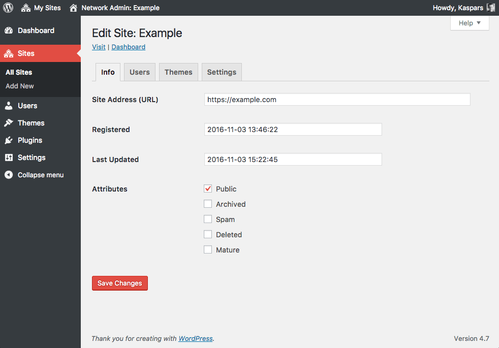

Here is a quick tip — you don’t need to use a domain mapping plugin to have a WordPress Multisite with top-level domains and/or sudomains. WordPress allows you to change a sub-domain to a top level domain once you have added the site:

The only important thing is to set the COOKIE_DOMAIN to something empty an empty string in your wp-config.php:
define('COOKIE_DOMAIN', '');
otherwise WordPress will always set it to your network’s $current_site->domain and you won’t be able to login into any of the other sites.
That’s pretty awesome but is that all we have to do?
What changes to the DNS settings do we have to make to make sure the domain points in the right direction?
Cheers
Spacechimp
Spacechimp, you will need to setup a wildcard subdomain with a single A record that sends all requests to ANYNAME.yourdomain.com to your server.
Thanks for the tip, I can confirm that it works. This is what I did:
1. Registered a few domains and changed DNS records to point them to my VPS
2. Added my primary domain to my VPS and the other ones as virtual hosts (you can also use a wildcard subdomain).
3. Install WordPress and enable Multisite with subdomains. (you *can* use the www-prefix if you want)
4. Create new sites and change the site URL as shown on the screenshot in the post.
I added a link to my signature for more detailed instructions.
Hi,
– I have a multisite installation with sub-directory approach (not sub-domains).
– primary site has its own domain (ex: abc.com) but not for the sub-sites in the network. So all the sub-sites will look like this: abc.com/sub-site1 so on.
Now the question is do I even need domain mapping?
Any suggestion will be a great help.
Thanks!
Umesh
Umesh, for a setup like you described you don’t need the domain mapping plugin. Everything should work just out of the box.
Hey Kaspars, thank you for writing this.
I use WP MS with domain mapping for a small (18) blog network, where users can register in any site and comment in any other with single sign-on (I use “Remote login” in the domain mapping plugin). Users login at domain.com/login/sitename/, not at each site’s singledomain.com.
If I disable the plugin and start using your straightforward technique, would I lose the single sign-on part? I know WP MS is designed closer to WP.com with many unrelated blogs, instead a tightly-knit blog network.
I’d like to know if someone experienced this before testing with a live site (and I know, I should have a staging environment, but every day that passes is a heavier task).
Hernan, I haven’t used the plugin you mentioned so I won’t be able to comment on it. I think creating a test setup locally would be the best approach for finding out if it works or not.
Are there any security implications with removing the COOKIE_DOMAIN ?
No security implications, Lee. Your browser will set the cookie domain to the current domain by default.
Hello,
Thank you for this tip. I’m interested. Please could you tell us more about:
1. Implication on the SEO with this method?
2. Following the “recommended” method, to be able to use top level domain, the wordpress space must be put at the base root of the server, wich can be annoying. What about it with your method?
Thank You,
Didier
Didier — 1. there are no SEO implications with using either of methods. Search engines care only about the site content. 2. WordPress can be placed anywhere on the server as long as the web server knows which domains should be sent to that WordPress instance.
THANK YOU so much for the COOKIE_DOMAIN tip!! My multisite install hasn’t been working, and I’ve been looking all over for a fix and didn’t get any help from the WordPress forums. Now it works! Thank you!
Hi Kaspars
Bingo,exactly what i was looking for .
9 threads up you said to Umesh that there is no for need domain mapping and there is is nothing more in his case as Everything should work just out of the box. Now since his case is also my I wanted to add his question and to ask you if that mean that I should skip the instruction under “Network Setup”
that say 1 Add the following to your wp-config.php file in…. 2Add the following to your .htaccess file in ….?
Thx
Tomlee, you shouldn’t skip that part. It is required for WordPress to actually know it is being used as multi-site install.
Brilliant – I was searching for this and refused to believe that the only way to achieve it was by using big, bulky plugins. Amazing that somebody can actually sell a plugin to do this for 20$
Anyway, thanks!
Yes, definitely brilliant. I’ve been using a Domain Mapping plugin for the last couple of years and today I learnt it was useless!
Why is this not documented in WordPress.org Codex? Is it not a basic feature for WordPress Multisite?
Thanks.
Thanks for the #protip… Happily working away on multisite locally now, woot!
I followed this blog post to set up domains for WordPress Multisite. My only problem is that all images are uploded and served from main domain.
Do you know how should I set it up that images uploaded from secondary domain will be uploaded to and served from secondary domain?
I also asked this question on Stack Exchange:
http://wordpress.stackexchange.com/questions/163426/why-are-images-uploaded-to-main-domain-when-using-multisite-with-different-doma
Looks like
wp_upload_dir()is prepending the wrong URL to all asset URLs. The only way this can happen is whenget_option( 'siteurl' )returns the URL of your primary site. Could you please check the value ofsiteurlin/wp-admin/options.phpof handysvandy.net.